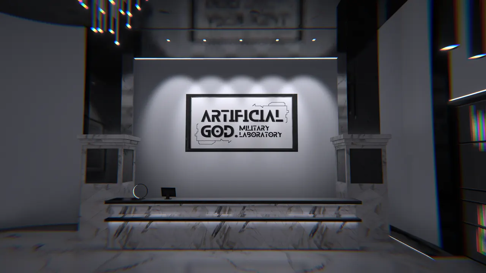
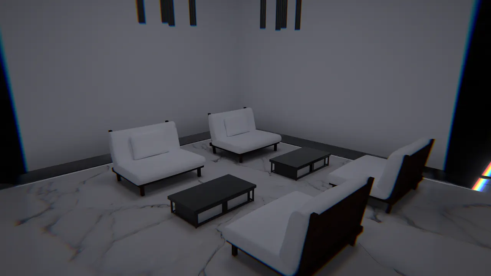
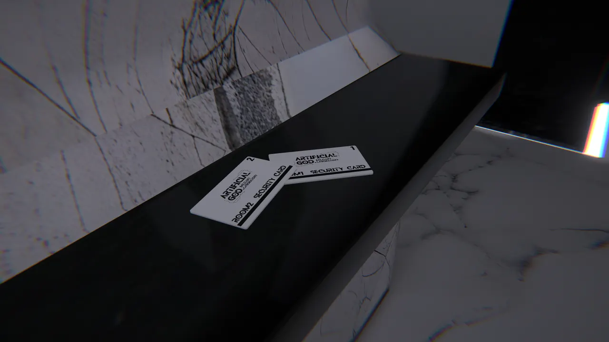
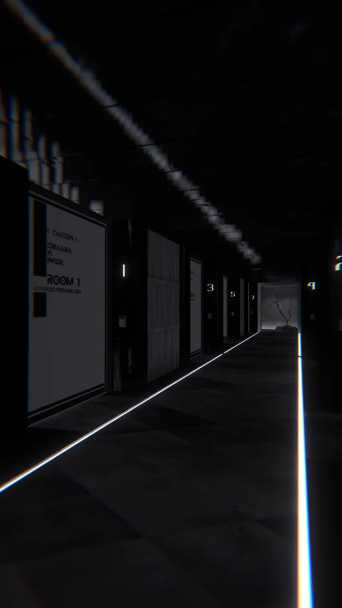
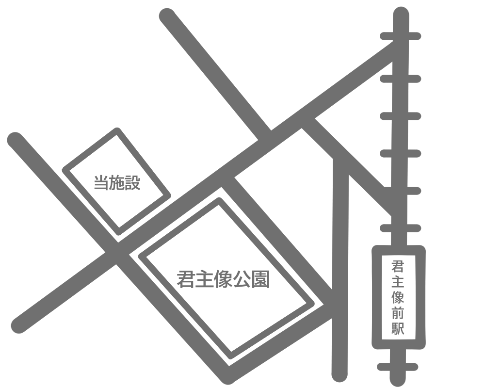

エントランス
ENTRANCE
ENTRANCE / 受付
研究施設への最初の一歩。一般開放時間にはここで余暇時間中のCreaturaと交流を図ることができます。
厳重なセキュリティを備えておりますのでご安心ください。

LOUNGE / 待合
実験エリア
RESEARCHCreaturaが管理されている実験区画。対話実験の際に使用されるエリアです。
二重のカードキーによるセキュリティと、24時間カメラによる監視で微細な異常も見逃しません。

CARD KEY / 個室用カードキー

CORRIDOR / 実験区画の廊下
アクセス・施設概要
ACCESS / OVER VIEW
公園の君主様の像が向いている方向にございます。
| 最寄り駅 | 主都市線 君主像前駅から徒歩5分 |
|---|---|
| 目印 | 君主像公園前 |
| 施設名 | Artificial God. Creatura研究施設 |
|---|---|
| 運営組織 | ヴァカーレ国立研究開発法人Artificial God. |
| 所在地 | 〒1A-Θ001 ヴァカーレ祖国 主庭市 主像前 1-1202 |
| 設立 | 宗暦7163年2月20日 |
| 代表者 | ヴァニタ・フォン・グレンヴィル |
| 資本金 | 2700百万Am |
| 従業員数 | 研究員 75名 管理員43名 計118名 |
| 事業内容 | 人間を素体とした人工神兵器「Creatura」の製造・研究・管理 |